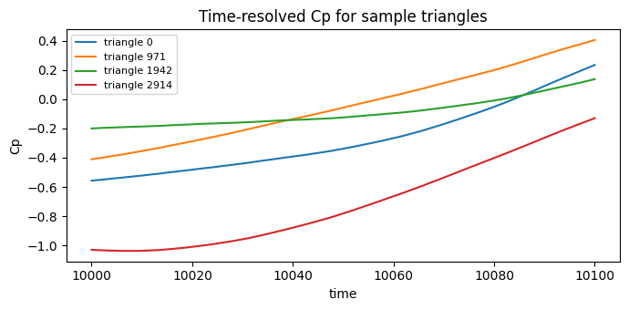

Generate the pressure coefficient (Cp)#
The pressure coefficient normalizes the surface pressure by the free-stream dynamic pressure:
In cfdmod v3 this is expressed as a pipeline template: a small YAML document listing the inputs (body pressure, static-pressure probe), a sequence of composable ops, and the outputs. This notebook runs the shipped cp.yaml template against the galpao wind-tunnel fixture.
Set up a working directory#
A pipeline template declares its inputs, ops and outputs with paths that are resolved relative to the template file. The shipped example templates live under fixtures/tests/pressure/templates/ and reference sibling ../data/ and ../galpao/ folders, so we copy the templates and the fixture data into a single scratch directory and run from there. In a real project you would instead point the template at your own data and run cfdmod run <template>.yaml directly.
[1]:
%matplotlib inline
import pathlib
import shutil
import tempfile
def find_fixtures() -> pathlib.Path:
"""Walk up from the current directory to locate the repo fixtures."""
for base in [pathlib.Path.cwd(), *pathlib.Path.cwd().parents]:
candidate = base / "fixtures" / "tests" / "pressure"
if candidate.is_dir():
return candidate
raise FileNotFoundError("could not locate fixtures/tests/pressure")
fixtures = find_fixtures()
workdir = pathlib.Path(tempfile.mkdtemp(prefix="cfdmod_pressure_"))
for name in ("data", "galpao", "templates"):
shutil.copytree(fixtures / name, workdir / name)
(workdir / "out").mkdir(exist_ok=True)
print("working directory:", workdir)
working directory: /tmp/cfdmod_pressure_u6sirp_9
The Cp pipeline template#
The template subtracts the static reference pressure per timestep (sub), divides by the dynamic pressure via a constant scale factor (1 / q), and finally reduces the time axis to per-element statistics (mean / rms / min / max).
[2]:
print((workdir / "templates" / "cp.yaml").read_text())
# Cp pipeline template (v3 schema).
#
# Reads body pressure and a static-pressure probe from disk, computes
# Cp = (p - p_ref) / dyn_pressure, optionally rescales time, and writes
# the time-resolved Cp series plus mean/rms/peak statistics.
#
# Anything you'd previously have configured under
# pressure_coefficient.default.statistics in cp_params.yaml now lives
# under the `statistics` step. Everything else is pipeline composition.
name: cp_default
inputs:
body:
kind: surface
path: ../data/bodies.galpao
p_ref:
kind: points
path: ../data/points.static_pressure
pipeline:
# 1. Subtract the static reference per timestep (column-wise broadcast,
# rule 2). The result lives on a new "cp" field on the body source.
- id: cp_unscaled
kind: sub
source: body
rhs: p_ref
field: pressure
out: cp
# 2. Divide by dynamic pressure. q_inf = 0.5 * rho * U_H^2
# Here U_H = 0.05, rho = 1.0 -> q = 0.00125. Scale = 1 / q.
- id: cp_t
kind: scale
source: cp_unscaled
field: cp
factor: 800.0
# 3. Per-element statistics over the full time axis.
- id: cp_stats
kind: statistics
source: cp_t
field: cp
kinds: [mean, rms, min, max]
outputs:
cp_timeseries:
source: cp_t
path: ./out/cp.time_series
cp_stats:
source: cp_stats
path: ./out/cp.stats
Run the pipeline#
The runner is backend-agnostic. Here we use XdmfH5Storage, which reads and writes the on-disk XDMF+H5 layout; notebooks and tests can instead use the in-memory MemoryStorage with the exact same recipe code. run_template returns a dict mapping every step id (and input) to its DataSource.
[3]:
from cfdmod import load_template, run_template
from cfdmod.adapters.xdmf_h5 import XdmfH5Storage
storage = XdmfH5Storage(pathlib.Path("/"))
bindings = run_template(load_template(workdir / "templates" / "cp.yaml"), storage=storage)
sorted(bindings)
[3]:
['body', 'cp_stats', 'cp_t', 'cp_unscaled', 'p_ref']
Inspect the time-resolved Cp#
cp_t is a SurfaceDataSource with one row per mesh triangle and one column per timestep. We plot the Cp history of a handful of triangles.
[4]:
import matplotlib.pyplot as plt
import numpy as np
cp_t = bindings["cp_t"]
times = cp_t.time.times()
cp = cp_t.fields.read("cp")
print("elements x timesteps:", cp.shape)
fig, ax = plt.subplots(figsize=(7, 3.5))
for idx in np.linspace(0, cp.shape[0] - 1, 4, dtype=int):
ax.plot(times, cp[idx], label=f"triangle {idx}")
ax.set_xlabel("time")
ax.set_ylabel("Cp")
ax.set_title("Time-resolved Cp for sample triangles")
ax.legend(loc="best", fontsize=8)
plt.tight_layout()
plt.show()
elements x timesteps: (2915, 101)

Per-element statistics#
The cp_stats output collapses the time axis to one value per triangle for each requested statistic.
[5]:
import pandas as pd
stats = bindings["cp_stats"]
df = pd.DataFrame({name: stats.fields.read(name) for name in stats.field_names})
df.describe()
[5]:
| mean | rms | min | max | |
|---|---|---|---|---|
| count | 2915.000000 | 2915.000000 | 2915.000000 | 2915.000000 |
| mean | -0.203118 | 0.153959 | -0.396791 | 0.106785 |
| std | 0.273381 | 0.062831 | 0.294066 | 0.250219 |
| min | -0.949901 | 0.002697 | -1.173019 | -0.664139 |
| 25% | -0.390826 | 0.110966 | -0.592470 | -0.017977 |
| 50% | -0.212155 | 0.167677 | -0.408554 | 0.130272 |
| 75% | -0.005807 | 0.203829 | -0.187683 | 0.280762 |
| max | 0.455437 | 0.307976 | 0.339985 | 0.757790 |